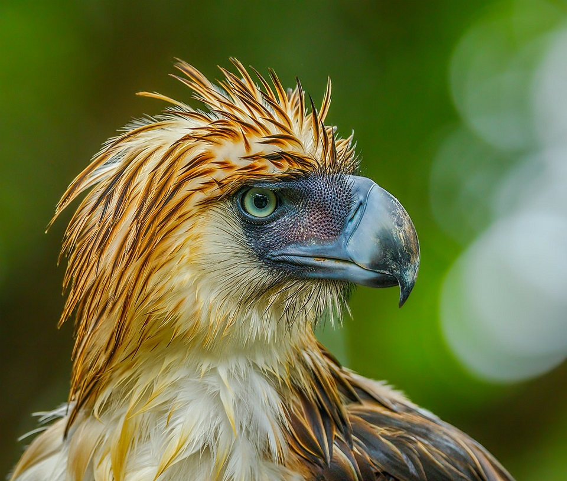
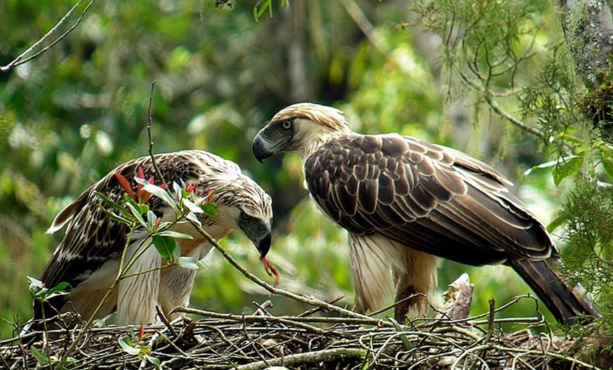
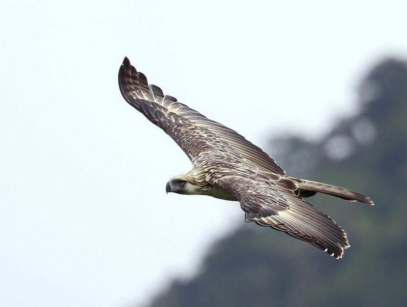
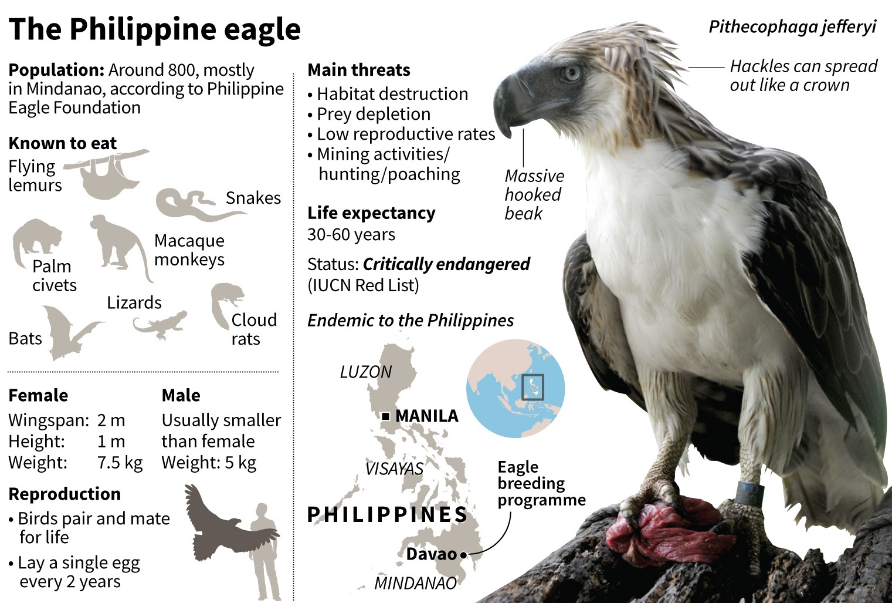

Ang haribon ang pinakamalaking agila sa buong mundo sa haba at lawak ng pakpak. Ito ay matatagpuan lamang sa Pilipinas. Kaya ipagmalaki at ikatuwa natin!
wikipediaUlo, malapit, nakatingin sa malayo, hari ng gubat
Mag-asawang haribon, buong katawan
Lumilipad sa himpapawid
Impormasyon
Pisikal